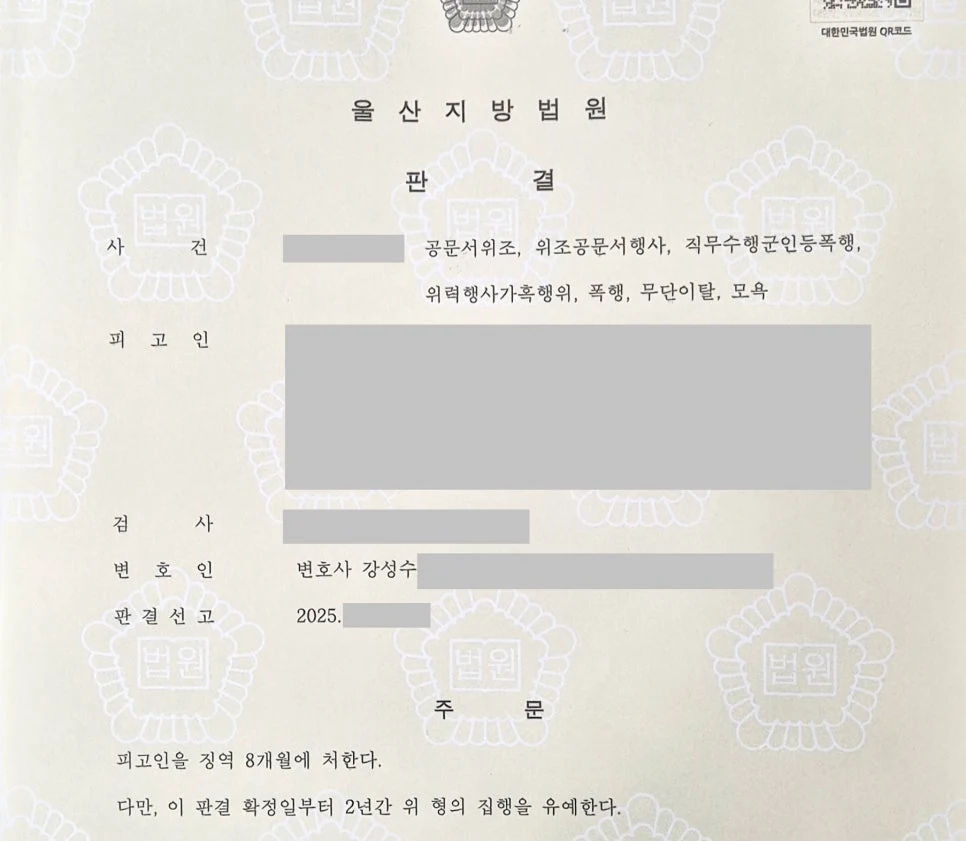

핵심 결과
군대 안에서 발생한 형사사건은 일반 사건보다 엄격하게 평가될 수 있습니다.
폐쇄적인 조직 안에서 피해자가 여러 명이고, 가혹행위가 장기간 이어졌다면 실형 위험이 커집니다.
이번 사건은 여기에 외출증 위조까지 더해진 사안이었습니다.
적용 혐의도 여러 개였습니다.
하지만 법무법인 우린은 섣부른 공탁이나 형식적인 반성문에 머물지 않았습니다.
피해 회복 과정, 합의 시도, 객관적인 재범 방지 자료를 정리했습니다.
최종 결과는 징역 8개월, 집행유예 2년이었습니다.
| 구분 | 내용 |
|---|---|
| 사건 분야 | 군 형사사건 |
| 주요 혐의 | 공문서위조, 위조공문서행사, 가혹행위, 폭행, 무단이탈, 모욕 |
| 피해자 수 | 다수 피해자 |
| 가장 큰 위험 | 피해자들의 강한 처벌 의사와 문서 위조 혐의 |
| 주요 대응 | 피해자 소통, 합의 노력, 객관적 반성자료, 재범 방지 자료 제출 |
| 최종 결과 | 징역 8개월, 집행유예 2년 |
사건 개요
의뢰인은 군 복무 중 여러 명의 후임과 관련된 형사사건으로 재판을 받게 되었습니다.
폭언과 가혹행위가 문제 되었습니다.
여기에 부대 밖으로 나가기 위해 외출증을 위조했다는 혐의도 함께 적용되었습니다.
군대 안에서의 가혹행위만으로도 재판부는 엄격하게 봅니다.
그런데 문서 위조까지 결합되면 죄질이 더 무겁게 평가될 수 있습니다.
| 쟁점 | 내용 |
|---|---|
| 다수 피해자 | 피해자가 여러 명이어서 피해 회복이 쉽지 않았습니다. |
| 가혹행위 | 폐쇄적인 군 조직 안에서 발생한 점이 불리했습니다. |
| 문서 위조 | 외출증 위조가 별도 혐의로 문제 되었습니다. |
| 피해자 감정 | 일부 피해자는 강한 처벌 의사를 보였습니다. |
| 실형 위험 | 범행 수와 죄질 때문에 실형 가능성이 있었습니다. |
실형 위험이 컸던 이유
- 군 조직 내부에서 발생한 사건이었습니다.
- 피해자가 여러 명이었습니다.
- 피해자들의 처벌 의사가 강했습니다.
- 외출증 위조 등 문서 관련 혐의가 함께 있었습니다.
- 재판부가 초기에는 반성 여부를 엄격하게 볼 수밖에 없는 상황이었습니다.
이런 사건은 감정적인 선처 호소만으로 해결되기 어렵습니다.
해결 전략
1. 피해자에게 직접 연락하지 않도록 했습니다
가해자가 피해자에게 직접 연락하면 상황이 더 악화될 수 있습니다.
특히 군 사건은 피해자가 강한 감정을 가지고 있는 경우가 많습니다.
그래서 변호인이 조심스럽게 소통 창구를 맡았습니다.
피해자에게 부담을 주지 않으면서 사과와 피해 회복 의사를 전달하는 방식으로 접근했습니다.
2. 합의가 어려운 과정도 자료로 남겼습니다
다수 피해자 사건에서는 모든 피해자와 합의가 되는 경우가 쉽지 않습니다.
중요한 것은 실제로 피해 회복을 위해 어떤 노력을 했는지입니다.
합의가 된 피해자에 대해서는 합의 자료를 정리했습니다.
끝내 합의가 어려웠던 피해자에 대해서도 사과와 회복 노력을 계속했다는 과정을 기록으로 남겼습니다.
3. 말뿐인 반성이 아니라 객관적 자료를 준비했습니다
“반성합니다”라는 말만으로는 부족했습니다.
분노조절 교육, 심리 상담, 생활 태도 변화, 가족의 감독 가능성 등 객관적인 자료를 정리했습니다.
재판부가 의뢰인의 변화 가능성을 확인할 수 있도록 자료를 구성했습니다.
| 대응 항목 | 준비한 내용 |
|---|---|
| 피해자 소통 | 변호인을 통한 조심스러운 사과와 합의 시도 |
| 피해 회복 | 합의 가능 피해자와의 실질적 합의 진행 |
| 합의 불발 자료 | 합의가 어려웠던 이유와 지속적인 노력 정리 |
| 반성 자료 | 교육 이수, 심리 상담, 반성문, 가족 탄원 자료 |
| 재범 방지 | 생활 환경 변화와 향후 관리 계획 제출 |
결과
재판부는 범행이 가볍지 않다고 보았습니다.
다수 피해자가 있었고, 군 조직 안에서 발생한 사건이라는 점도 불리했습니다.
하지만 피해 회복 노력, 합의 과정, 객관적인 반성자료, 재범 방지 계획을 함께 고려했습니다.
그 결과 의뢰인은 실형을 피할 수 있었습니다.
최종 결과
군 복무 중 외출증 위조와 다수 피해자에 대한 가혹행위가 문제 된 사건에서 징역 8개월, 집행유예 2년이 선고되었습니다.
의뢰인은 구속을 피하고 사회 안에서 다시 생활할 기회를 얻었습니다.
군 형사사건에서 조심해야 할 점
군대 안에서 발생한 사건은 피해자 진술과 조직 내부 자료가 중요합니다.
피해자가 여러 명이면 사건이 더 무겁게 보일 수 있습니다.
또한 피해자에게 직접 연락하거나 섣불리 공탁부터 하는 방식은 오히려 불리하게 작용할 수 있습니다.
중요한 것은 사건을 감정적으로 처리하지 않는 것입니다.
피해 회복, 합의 시도, 반성자료, 재범 방지 계획을 순서대로 정리해야 합니다.
군 형사사건은 초기 대응 방향이 결과를 크게 바꿀 수 있습니다.
결론
외출증 위조와 군대 가혹행위가 함께 문제 된 사건은 실형 가능성이 있는 무거운 사건입니다.
특히 피해자가 여러 명이고 처벌 의사가 강하다면 대응이 더 어려워집니다.
하지만 피해 회복 과정과 객관적인 반성자료를 제대로 준비하면 집행유예 가능성을 검토할 수 있습니다.
사무장·상담실장 없이 변호사가 직접 상담합니다
군 형사사건은 초기 상담부터 조사 대응, 피해자 소통, 재판 변론까지 흐름을 정확히 잡아야 합니다.
법무법인 우린은 강성수 변호사가 직접 사건을 검토하고, 필요한 자료와 대응 방향을 정리합니다.
실형 가능성이 걱정되는 상황이라면 먼저 사건 기록과 피해 회복 가능성을 정확히 확인해야 합니다.
이 글은 일반적인 법률 정보 제공을 위한 자료이며, 개별 사건의 결과를 보장하지 않습니다. 구체적인 대응은 사실관계와 증거에 따라 달라질 수 있습니다.